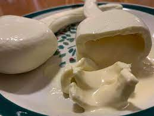

E. I. Martinez Chavez Victor Uriel
2021
2021
HUASTRAVEL
| Bocoles | Enchiladas con cecina Huasteca | Queso de bola | Tamales | Zacahuil |
|---|---|---|---|---|
|  |
| Dulce de chayote | Conserva de ciruela | Dulce de pipian |
|---|---|---|
| Aguardiente | Agua de capulin | Agua de jobito | Agua de tamarindo |
|---|---|---|---|